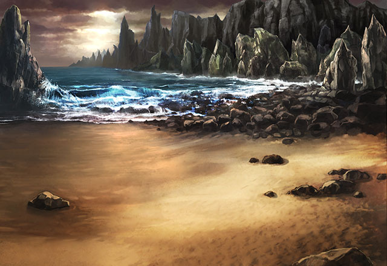
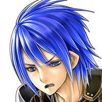
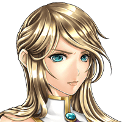
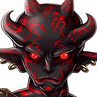
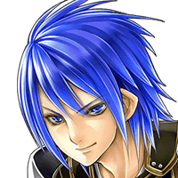
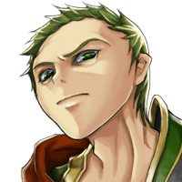

セリア
火山で汗ダクになっちゃったし、 ひと泳ぎしたい気分ね。
ルジーナ
それに、誰もお前の水着姿なんざ 見たくねーって前も言っただろ？


カル
ホラ、お前ら止めろって。
カル
また、オルモンド火山の時みたく 戦う前に疲れちまうぞ。

パリス
本当に止めて。
パリス
私もこれ以上、不快な気分に なりたくないわ……。
ティリス
Shou-chan。 やっぱりみんなと一緒だと元気出るね♪

ザーグ
人間たちよ。 貴様たちは何のためにこの地を前に進む。
ザーグ
いや、だからこそ神が導く必要がある ということか。

カル
いや、あんたに導いてもらう必要はないぜ。
カル
俺らを導いてくれる神様は もう側にいるんだからな。
ザーグ
我はまだ貴様たちに真実を 話していないのだからな。
カル
そういえば、この前はその真実とやらを 聞きそこなったんだったな。
カル
で、今日はそれを話すために わざわざ来てくれたのかい？
ザーグ
我はお前たちのために 天空殿タラールへの道を開いた。
ルジーナ
チッ、また勝手なこと言って 消えちまいやがったか。
セリア
そんな見え見えの罠に 飛び込むわけないでしょ！
カル
あのザーグとかいう神徒は この前のメアと違って
カル
俺らを罠にかけるようなタイプじゃ ないみたいだからな。
カル
まあ、だからといってヤツの 誘いに乗るつもりはないけどな。
パリス
何があろうと我々インペリアルガードは あなた様の味方です。
パリス
気にせずアフラ・ディリスを 目指しましょう！

ルジーナ
ヤツの誘いに乗るかどうかは知らねーが 天空殿タラールはどうせ通り道だ。
ルジーナ
女神さんを置いていくかどうかは その時の気分で決めればいいさ。
ルジーナ
俺様の頭はお前たちとは デキが違うんでな！
カル
そういう案があるのは否定しないが 俺はそれを選択するつもりはない。
ルジーナ
おい、カル！ このバカにお前から説明してやれ！
カル
女神さん、最初に言っておくけど、 これはあくまで案なだけで
カル
ザーグは、俺たちに真実ってのを話した後、 すぐに何かを選択させることはないと思う。
カル
だったら、まずは天空殿タラールで ヤツの話だけでも聞いて
カル
別の機会にあらためて ヤツの誘いを断るって感じかな。
セリア
……ルジーナが考えそうな 小狡いアイディアね。
カル
まあ、やっぱり罠の可能性が ないわけじゃないし、
カル
ザーグの話が有益な情報じゃない 可能性も高いから
カル
俺はヤツの話を聞く必要はないって 判断してるよ。
カル
女神さんもそんな顔してないで 先に進もうぜ！
ティリス
せっかくのプリティな顔が 台無しになっちゃうね。
セリア
あんたも黙ってないで 出発のかけ声でもしなさいよ！